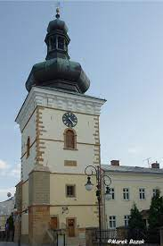

Wieza zegarowa na zamku w Łańcucie |

Zegar na kościele w Sokołowie Małopolskim |

Zegar na ratuszu w Leżajsku |
Zegar na ratuszu w Rzeszowie |
Mechanizm zegaru z Rzeszowa |
|---|---|---|---|---|
|
Wieża zegarowa w Przemyślu |
Zegar na zamku w Dzikowcu |

Dzwonnica z zegarem w Krośnie |
Wieża "Bazar" Iwonicz-Zdrój |
Zegar ratusza Jarosław |
Zegary na wieżach
Są one często charakterystycznymi elementami architektury miejskiej i stanowią ważne symbole miast na całym świecie.
Zegary wieżowe mają zwykle większe rozmiary niż zwykłe zegary, aby były widoczne z daleka i mogły pełnić funkcję punktu orientacyjnego dla mieszkańców miasta. Zazwyczaj wyposażone są w wskazówki, które pokazują godziny, minuty i czasami sekundy, umożliwiając precyzyjne odczytywanie czasu.
Wiele zegarów wieżowych jest również wyposażonych w dzwony, które oznajmiają godziny lub inne ważne momenty, takie jak przyjście nowego roku. Dzwony te, zwane carillonami, mają różne rozmiary i mogą wydawać dźwięki w zależności od konfiguracji. W niektórych przypadkach, zegary wieżowe mogą także posiadać dodatkowe funkcje, takie jak wyświetlanie faz księżyca, wschodów i zachodów słońca, a nawet informacje astronomiczne.
Zegary wieżowe mają bogatą historię i często są związane z ważnymi wydarzeniami w życiu miast i ich mieszkańców. Przez wieki były one źródłem informacji o czasie dla lokalnej społeczności, a także symbolem stabilności, tradycji i prestiżu. Dziś wiele zegarów wieżowych jest nadal czynnych i stanowi popularne atrakcje turystyczne, przyciągając odwiedzających, którzy chcą podziwiać ich piękno i usłyszeć dźwięk ich dzwonów.